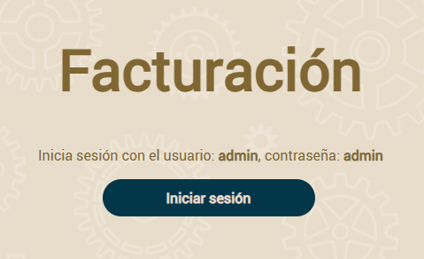

Sigue este video para crear y ejecutar tu primer proyecto OpenXava usando IntelliJ IDEA:
O si no te gustan los videos sigue las instrucciones a continuación.
En primer lugar has de crear un proyecto nuevo usando un arquetipo Maven desde IntelliJ. Pare ello escoge la opción File > New > Project...:

Una vez en el diálogo escoge la opción Maven Archetypes dentro de la sección Generators:

Después teclea el nombre del proyecto, facturacion en el campo Name:

Ahora es el momento de escoger el arquetipo. Para ello en el campo Catalog selecciona Maven Central y en el campo Archetype teclea openxava para que te muestre todos los arquetipos de OpenXava. Ahí escoge openxava-archetype-spanish.
Como versión escoge la última versión de OpenXava disponible, que actualmente es la 7.6.4.1. Nunca escojas la versión 7.X.X.

Para finalizar, ve a la parte de abajo del diálogo y abre la sección Advanced Settings y en el campo GroupId pon com.tuempresa que es el valor que vamos a usar en este curso:

Si todo ha ido bien el diálogo debería haber quedado más o menos así:

Pulsa el botón Create para crear el proyecto.
Una vez creado el nuevo proyecto hemos de hacer un mvn package para dejarlo listo para trabajar. Esto es algo que hay que hacer solo la primera vez. Pulsa en el botón con una M en la parte derecha del IntelliJ. Esto abre la vista de Maven donde has de pulsar el botón "Execute Maven Goal":

Esto saca un diálogo donde puedes escoger la tarea que quieres ejecutar. En este caso escoge mvn package:

Ahora tu proyecto ya está listo para empezar a escribir código:

Desarrollar es muy fácil: solo has de añadir entidades para ir haciendo crecer tu aplicación. Las entidades se añaden en el paquete modelo. Abre la carpeta src/main/java, allí selecciona el paquete com.tuempresa.facturacion.modelo. Verás que contiene una entidad de muestra. Bórrala:

Ahora ya podemos añadir nuestras propias entidades. Empezaremos con una versión simplificada de Cliente con solo numero y nombre.
Abre la carpeta src/main/java, allí selecciona el paquete com.tuempresa.facturacion.modelo y con el botón derecho del ratón escoge New > Java Class:

Después teclea Cliente como nombre de clase y pulsa ENTER.

Fíjate que la C de Cliente está en mayúscula, esto es muy importante, en Java todas las clases empiezan con mayúscula.
El código inicial que Eclipse proporciona para Cliente es muy simple:
package com.tuempresa.facturacion.modelo;
public class Cliente {
}
Ahora, te toca a ti rellenar esta clase para convertirla en una entidad adecuada para OpenXava. Solo necesitas añadir la anotación @Entity y las propiedades numero y nombre:
package com.tuempresa.facturacion.modelo;
import javax.persistence.*;
import org.openxava.annotations.*;
import lombok.*;
@Entity // Esto marca la clase Cliente como una entidad
@Getter @Setter // Esto hace los campos a continuación públicamente accesibles
public class Cliente {
@Id // La propiedad numero es la clave. Las claves son obligatorias (required) por defecto
@Column(length=6) // La longitud de columna se usa a nivel UI y a nivel DB
int numero;
@Column(length=50) // La longitud de columna se usa a nivel UI y a nivel DB
@Required // Se mostrará un error de validación si la propiedad nombre se deja en blanco
String nombre;
}
Con esto tienes el código suficiente (justo una clase) para ejecutar tu aplicación. Hagámoslo.
Abre el paquete com.tuempresa.facturacion.run y con el botón derecho sobre la clase facturacion y escoge Run 'facturacion.main()':

Espera hasta que la consola muestre un mensaje diciendo "Aplicación iniciada", como este:

Ya tienes tu aplicación ejecutándose. Para verla, abre tu navegador favorito (Chrome, Firefox, Edge o Safari) y ve a la siguiente URL:
http://localhost:8080/facturacion
Estás viendo tu aplicación por primera vez. Para empezar pulsa en el botón Iniciar sesión:

Ahora, introduce admin/admin y pulsa en Entrar:

Después, pulsa en la parte de la izquierda se mostrará una lista de módulos, escoge Clientes:

Usa el módulo Clientes para crear nuevos clientes, simplemente introduce el número y el nombre y pulsa Grabar.

Pulsa en Lista para ver los clientes que has creado. Enhorabuena, tienes tu primera aplicación OpenXava funcionando.
A partir de ahora, desarrollar con OpenXava es muy fácil. Simplemente, escribes una clase y ya puedes ver el resultado en el navegador. Creemos una entidad para Producto.
Selecciona el paquete com.tuempresa.facturacion.modelo y pulsa el botón New Java Class:
Después teclea Producto como nombre de clase y pulsa ENTER.

Escribe el siguiente código para Producto:
package com.tuempresa.facturacion.modelo;
import javax.persistence.*;
import org.openxava.annotations.*;
import lombok.*;
@Entity @Getter @Setter
public class Producto {
@Id @Column(length=9)
int numero;
@Column(length=50) @Required
String descripcion;
}
Ahora, pulsa el botón Rerun, que es el botón verde que hay en la parte arriba del IDE. Esto parará la aplicación y la volverá a iniciar:

Para ver tu nueva entidad en acción abre tu navegador y ve a la URL:
http://localhost:8080/facturacion/modules/Producto
Después de identificarte con admin/admin obtendrás:
Sí, ya tienes un nuevo módulo en marcha, y solo has tenido que escribir una simple clase. Ahora puedes concentrarte en hacer crecer tu aplicación.
¡Enhorabuena! Has creado tu primera aplicación OpenXava. Si no ha sido así y has tenido algún problema con el ejemplo de arriba, pregunta en el foro:
Te ayudaremos a resolver cualquier dificultad.
Esta guía de primeros pasos es la lección 1 de un curso completo de OpenXava. Este curso te enseñará cómo desarrollar aplicaciones empresariales con OpenXava, así como con otras tecnologías, herramientas y marcos de trabajo Java. Desarrollaremos paso a paso una aplicación completa desde cero. Se trata de una pequeña aplicación de facturación con facturas, clientes, productos y así por el estilo. Esta aplicación es una mera excusa para aprender algunos casos típicos en aplicaciones de gestión. Puedes aplicar todo lo que aprendas con esta aplicación a cualquier otra aplicación de gestión en cualquier otro dominio.
Este es el contenido del curso:
Ya estás listo para pasar a la siguiente lección, sin embargo deberías considerar adquirir un poco de conocimiento base, tal como:
¿Quieres usar otro IDE? ¿Quieres ir contra MySQL, PostgreSQL, Oracle, Microsoft SQL Server, AS/400, Informix, Db2 o Firebird? ¿Quieres una guía de referencia detallada? Echa un vistazo a la documentación de OpenXava, que incluye todo esto y mucho más.
¿Preparado? Ve a la lección 2